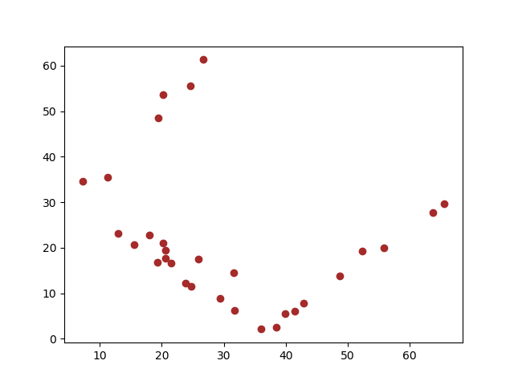
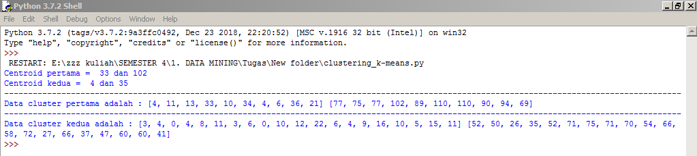

Implementasi K-Means Clustering dengan python
Implementasi K-Means Clustering dengan Python¶
Disini saya akan menjelaskan tentang pengimplementasian K - Means Clustering pada dataset " Jumlah Posyandu di Bandung.csv " yang mana dataset tersebut saya dapatkan dari www.dataset.bandung.go.id .
Tujuan saya akan mengclustering dataset ini adalah untuk mengetahui kelompok data pada kolom mandiri dan jumlah.
Untuk pengimplementasiannya saya menggunakan bahasa pemrograman Python 3.7.2 dan script yang saya tuliskan dibawah merupakan script yang tulis sendiri.
Berikut adalah langkah - langkahnya :¶
- Install libraries
pip install pandas
pip install matplotlibUntuk menginstall kita harus lakukan di CMD, lakukan penginstalan ketiga librari diatas secara bergantian. Pandas digunakan untuk membaca file csv dan memudahkan kita untuk membagi fields pada csv menjadi beberapa list / array. sedangkan matplotlib digunakan untuk visualisasi data yang mana dengan librari ini kita dapat melihat kelompok data atau persebaran data.
- Membuat project baru dan mengimport libraries
import csv
import math
import random
import pandas as pd
import matplotlib.pyplot as pltImport CSV merupakan librari asli dari python yang berfungsi memanggil file csv yang akan kita analisis, import math juga merupakan librari asli dari python yang berfungsi untuk melakukan perhitungan seperti mencari akar suatu bilangan, import random berfungsi untuk pengambilan nilai pada list secara acak yang pada kasus ini berfungsi dalam pengambilan centroid, import pandas untuk membaca file csv, dan import matplotlib.pyplot as plt berfungsi untuk visualisasi cluster data.
- Membuat variabel bernama akar untuk memudahkan mencari akar suatu nilai
akar = math.sqrt- Mengambil kolom mandiri dan kolom jumlah
def program():
dataset = pd.read_csv("data-jumlah-posyandu-2018.csv")
# mengambil kolom 4 dan 5
kol_mandiri = dataset.iloc[:, 4].values
kol_jumlah = dataset.iloc[:, 5].values- Mencari centroid acak, disini saya menggunakan k=2 atau 2 cluster
def mencari_centroid_dst():
# mengambil letak centroid pertama acak
random1 = []
for i in range(30):
random1.append(i)
hasil_random1 = random.choice(random1)
# hasil centroid pertama acak
cen_pertama1 = kol_mandiri[hasil_random1]
cen_pertama2 = kol_jumlah[hasil_random1]
# mengambil letak centroid kedua acak
random2 = []
for j in range(30):
random2.append(j)
hasil_random2 = random.choice(random2)
# hasil centroid kedua acak
cen_kedua1 = kol_mandiri[hasil_random2]
cen_kedua2 = kol_jumlah[hasil_random2]- seleksi kondisi jika hasil centroid cluster 1 sama dengan cluster 2 maka program akan mencari centroid lagi, tetapi jika tidak maka program akan memulai mencari jarak / distance, serta mencari anggota cluster 1 dan anggota cluster 2.
if (cen_pertama1==cen_kedua1 and cen_pertama2==cen_kedua2):
mencari_centroid_dst()
else:
# menghitung distance ke centroid 1 dan centroid 2
hasil_hitung_pertama1 = []
hasil_hitung_pertama2 = []
hasil1 = []
hasil2 = []
anggota1_kiri = []
anggota1_kanan = []
anggota2_kanan = []
anggota2_kiri = []
jml_awal1 = []
jml_awal2 = []
for a in range(len(kol_mandiri)):
for b in range(len(kol_jumlah)):
if (a==b):
jarak1 = akar(((cen_pertama1 - kol_mandiri[a])**2) + ((cen_pertama2 - kol_jumlah[a])**2))
jarak2 = akar(((cen_kedua1 - kol_mandiri[a])**2) + ((cen_kedua2 - kol_jumlah[a])**2))
if(jarak1 < jarak2):
hasil1.append(jarak1)
anggota1_kiri.append(kol_mandiri[a])
anggota1_kanan.append(kol_jumlah[a])
hasil_hitung_pertama1.append(jarak1)
jml_awal1.append(jarak1)
hasil_hitung_pertama2.append(jarak2)
else:
hasil2.append(jarak2)
anggota2_kanan.append(kol_jumlah[a])
anggota2_kiri.append(kol_mandiri[a])
hasil_hitung_pertama2.append(jarak2)
jml_awal2.append(jarak2)
hasil_hitung_pertama1.append(jarak1)- Setelah itu mencari rata - rata dari semua anggota tiap cluster sebagai pusat centroid yang baru dan mencari distance lagi serta mencari anggota cluster 1 yang baru dan anggota cluster 2 yang baru pula.
# menghitung rata-rata tiap kolom sebagai pusat cluster yang baru
hasil1_baru = []
hasil2_baru = []
anggota_clus1 = []
anggota_clus2 = []
seluruh_kiri = []
seluruh_kanan = []
anggota1_kiribaru = []
anggota1_kananbaru = []
anggota2_kiribaru = []
anggota2_kananbaru = []
rata1_a = sum(anggota1_kiri) / len(anggota1_kiri)
rata1_b = sum(anggota1_kanan) / len(anggota1_kanan)
rata2_a = sum(anggota2_kiri) / len(anggota2_kiri)
rata2_b = sum(anggota2_kanan) / len(anggota2_kanan)
for j in range(len(kol_mandiri)):
for k in range(len(kol_jumlah)):
if(j==k):
dist1 = akar(((rata1_a - kol_mandiri[j])**2) + ((rata1_b - kol_jumlah[j])**2))
dist2 = akar(((rata2_a - kol_mandiri[j])**2) + ((rata2_b - kol_jumlah[j])**2))
if (dist1<dist2):
hasil1_baru.append(dist1)
seluruh_kiri.append(dist1)
seluruh_kanan.append(dist2)
anggota_clus1.append(kol_mandiri[j])
anggota1_kiribaru.append(kol_mandiri[j])
anggota1_kananbaru.append(kol_jumlah[j])
else:
hasil2_baru.append(dist2)
seluruh_kanan.append(dist2)
seluruh_kiri.append(dist1)
anggota_clus2.append(kol_mandiri[j])
anggota2_kiribaru.append(kol_mandiri[j])
anggota2_kananbaru.append(kol_jumlah[j])- Jika hasil anggota cluster 1 dan anggota cluster 2 sudah tidak ada yang berubah maka akan ditampilkan output scatter plot dari data cluster 1 dan cluster 2, jika tidak maka program akan mengulang lagi proses pencarian rata - rata tiap cluster dan mencari anggota cluster lagi.
if (len(hasil1)==len(hasil1_baru) and len(hasil2)==len(hasil2_baru)):
plt.scatter(seluruh_kiri,seluruh_kanan,c='brown')
plt.show()
print ("Centroid pertama = ",cen_pertama1,"dan",cen_pertama2)
print ("Centroid kedua = ",cen_kedua1,"dan",cen_kedua2)
print ("----------------------------------------------------------------------------------------------------------------------------------------------")
print ("Data cluster pertama adalah :",anggota1_kiri,anggota1_kanan)
print ("----------------------------------------------------------------------------------------------------------------------------------------------")
print ("Data cluster kedua adalah :",anggota2_kiri,anggota2_kanan)
else:
program()
mencari_centroid_dst()
program()- Hasil run program diatas :


Diatas merupakan penjelasan tentang studi kasus k - means clustering pada dataset jumlah posyandu di bandung. Semoga dapat diterima dan dipahami dengan mudah.